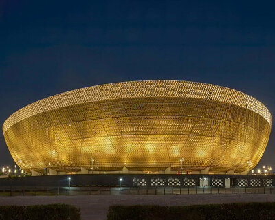
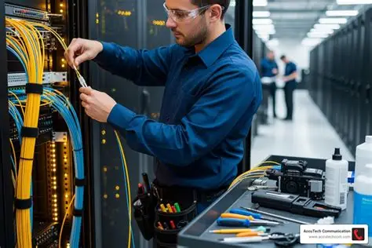
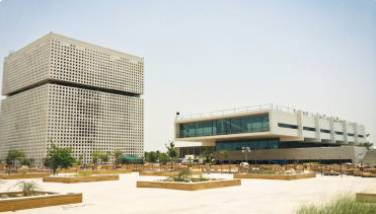
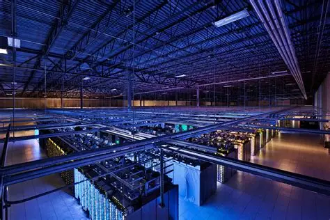
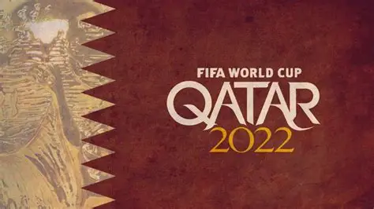

Bin Omran Trading & Telecommunication successfully delivered cutting-edge Fiber Optic Cabling and Passive Network Cabling for all FIFA World Cup 2022 stadiums, ensuring seamless connectivity for the world's biggest sporting event.


Bin Omran T&T implemented state-of-the-art ICT infrastructure for the 2022 FIFA World Cup venues, ensuring high-speed and reliable connectivity.
Ultra-fast communication network across all stadiums
Critical cabling for CCTV, access control & broadcasting
Enhancing Qatar's status as a tech leader



"Our work at the FIFA World Cup 2022 set a new benchmark in digital infrastructure excellence."